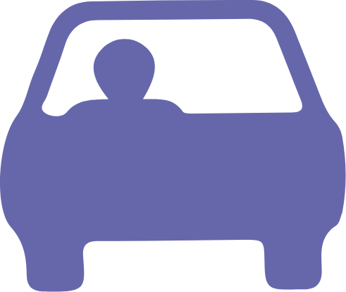
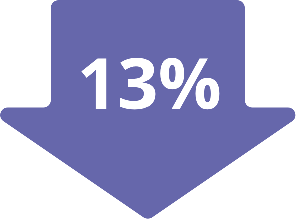
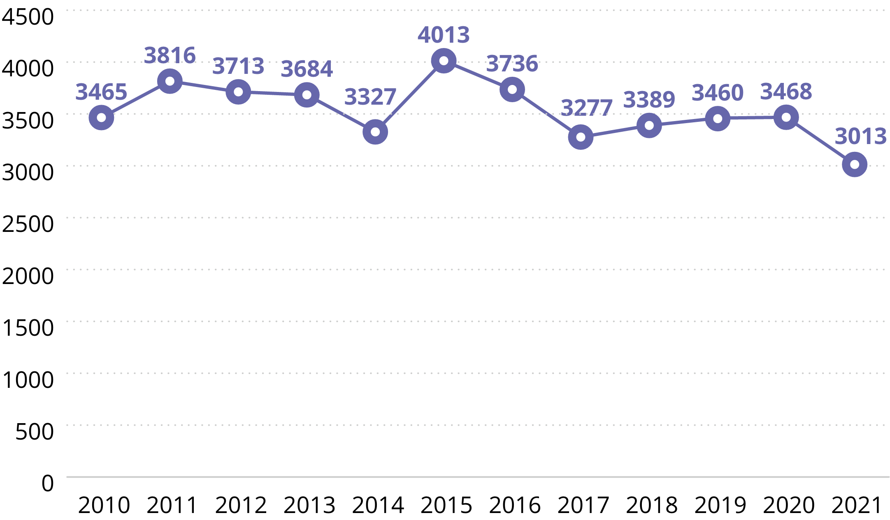

Liikluskuriteod
Laadi alla .xlsxLiikluskuritegudest valdava osa moodustab joobes sõidukijuhtimine, millele järgneb süstemaatiline juhtimisõiguseta sõidukijuhtimine. Liikluskuritegude arv püsis aastatel 2017–2020 ligikaudu samal tasemel, kuid vähenes 2021. aastal eeskätt tänu joobes sõidukijuhtimise vähenemisele.


Liikluskuritegusid
registreeriti
3013
Liiklus-
kuritegudest
moodustas
80%
joobes sõidukijuhtimine
(KarS § 424)
17%
süstemaatiline
juhtimisõiguseta
sõitmine (KarS § 4231)

Liikluskuriteod
Alates 2015. aastast loetakse kuriteoks sõiduki süstemaatilist juhtimist juhtimisõiguseta isiku poolt. Niisuguseid kuritegusid registreeriti 2015. aastal 737, mis tõstis ka liikluskuritegude üldarvu. 2021. aastal registreeriti niisuguseid kuritegusid 505.